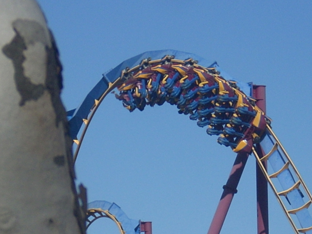
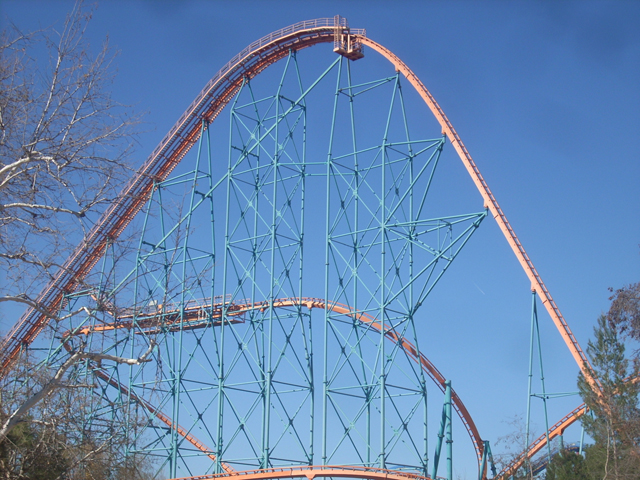
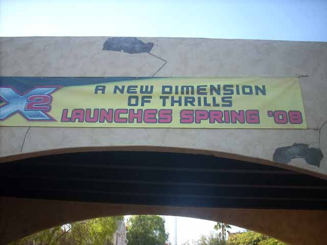

TPR DVD Party
Here we are at the TPR DVD Party. First we got Tatsu and Viper ERT. But we didn't film that. Oh yeah, the park president also gave us backstage tours. You'll hear more about those later. And here is Cody holding the TPR sign. His face pretty much sums up Themeparkreview.
Bye Bye Freefall. We'll miss you. (And hope you get replaced with a 2nd Generation Drop Tower.)

Oh yeah, here is Scream.
 Scream is fun.
Scream is fun.
And now it's time for our awsome lunch at Mooseburger Lodge.
See all those cups, they all had free T Shirts inside them.
It's nice to know that Magic Mtn is fatass friendly. The problem is that for those that arn't fatasses, these shirts are pointless. I mean, these shirts are so big that they would probably fit Fatass Stan.
And now, it's time for the backstage tours.
Our first stop was to see what's left of Flashback.
 5 years from now, if you get a new metal object, spit on it because that metal may have once been part of the peice of crap known as Flashback.
5 years from now, if you get a new metal object, spit on it because that metal may have once been part of the peice of crap known as Flashback.
Next up on the tour was a talk about Thomas Town.

You can get some sweet views of Goliath from Thomas Town.
 This part of Goliath really reminds me of some rollercoaster in Ohio. One that is very overrated and has Satan like Operaters. If you know what coaster I'm talking about, email me and the first person to get it right will win $0.50. (One guess per person.)
This part of Goliath really reminds me of some rollercoaster in Ohio. One that is very overrated and has Satan like Operaters. If you know what coaster I'm talking about, email me and the first person to get it right will win $0.50. (One guess per person.)

The final part of the backstage tours was a visit to see X2's progress.
They told us a lot of cool stuff about X2. And don't try and ask me what they said because I'm just going to laugh at you if you do.
 After the backstage tours, Cody and I left Robb so we could bomb some bastards on Log Jammer. (This one guy actually walked up to us and yelled at us for bombing him. Next time I see him, I'm going to get him twice as hard.)
After the backstage tours, Cody and I left Robb so we could bomb some bastards on Log Jammer. (This one guy actually walked up to us and yelled at us for bombing him. Next time I see him, I'm going to get him twice as hard.)
 Hey Cody. Glad to see you're soaking wet.
Hey Cody. Glad to see you're soaking wet.
"I'll get you back!!!" (He meant it.)
They also had a Questions and Answers session.
This is all you're going to see.
Flashback doesn't deserve a grave. Instead, it was cut up and given to coaster retards around the country where they will be tortured by their stupid antics. (Like in Cody's case, almost getting eaten.)
And then we went to Robb's place where Cody ate Robbs Fire Wings. He'll regret this tommorow.
Home